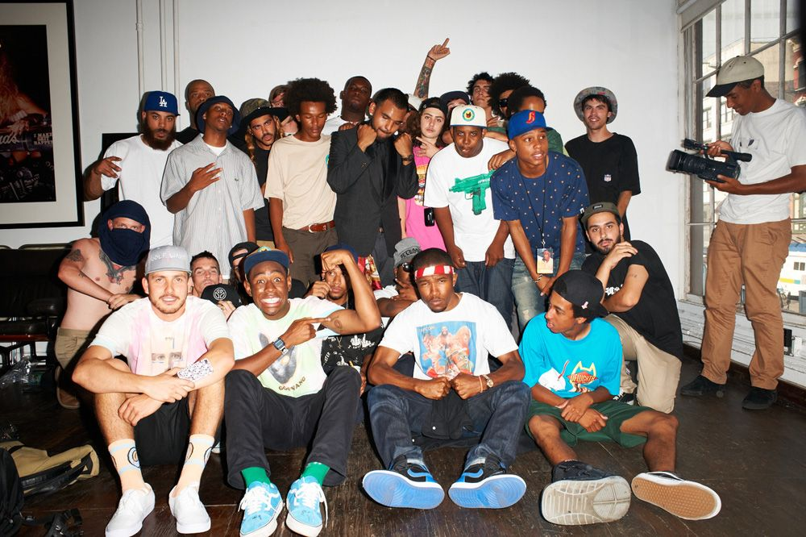
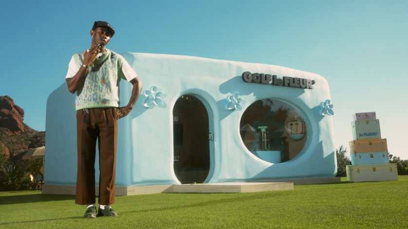

Infancia
Tyler Gregory Okonma nacio el 6 de marzo de 1991 en Ladera Heights, California. Crecio con una pasion por la musica y la creatividad, aprendiendo a tocar el piano a una edad temprana y mostrando un interes notable por la produccion musical.
Su infancia estuvo marcada por su habilidad para crear musica en su computadora, experimentando con sonidos y ritmos que sentaron las bases de su carrera futura en la industria musical.

Carrera
OF

En 2007, Tyler, junto con un grupo de amigos, fundo el colectivo creativo Odd Future Wolf Gang Kill Them All (OFWGKTA o simplemente Odd Future). Este colectivo se convirtio en una plataforma para la musica, el arte, la moda y la cultura juvenil alternativa.
Tyler emergio como una figura destacada dentro de Odd Future, no solo por su talento musical sino tambien por su habilidad para dirigir videos musicales y su enfoque disruptivo en la produccion.
Carrera como solista
El debut en solitario de Tyler, The Creator con su album "Goblin" en 2011 marco un punto crucial en su carrera. Este album, caracterizado por sus letras provocativas y un sonido oscuro y experimental, genero tanto controversia como admiracion en la escena musical.
Sin embargo, fue con el lanzamiento de "Wolf" en 2013 cuando Tyler comenzo a recibir una mayor aclamacion critica y reconocimiento por su madurez artistica. Este album exhibio una narrativa mas cohesiva, explorando temas personales y presentando una evolucion en su produccion musical.
"Cherry Bomb", lanzado en 2015, representó un giro audaz en su sonido, combinando elementos de jazz, soul y electrónica. Aunque polarizo a algunos fanaticos y criticos, fue un testimonio del deseo de Tyler por desafiar las expectativas y explorar nuevas direcciones musicales.
El álbum "Flower Boy" en 2017 se convirtio en un hito en su carrera. Este proyecto reveló una faceta mas intima y reflexiva de Tyler, explorando temas de identidad, amor y crecimiento personal. Con una produccion más pulida y colaboraciones destacadas, como las de Frank Ocean y Pharrell Williams, "Flower Boy" recibio elogios generalizados y una nominacion al Grammy por Mejor Album de Rap.
La maduracion artistica de Tyler continuo con "Igor", lanzado en 2019. Este album presento una narrativa conceptual sobre un amor no correspondido, mostrando una experimentacion aun mas profunda en la produccion y la composicion. "Igor" le otorgo a Tyler su primer premio Grammy como Mejor Album de Rap.
El ascenso de Tyler, The Creator como solista alcanzo un nuevo hito con el lanzamiento de "Call Me If You Get Lost" en 2021. Este album se convirtio en otro capitulo significativo en la evolucion artistica del rapero y productor.
Premios
A lo largo de su carrera, Tyler, The Creator ha sido reconocido por su innovacion y contribuciones a la musica, la moda y el entretenimiento, recibiendo multiples premios y nominaciones que destacan su impacto en la industria:
Ha sido nominado en varias ocasiones a los premios Grammy, con su album "Flower Boy" obteniendo una nominacion al Mejor Album de Rap en 2018 y "Igor" ganando el premio al Mejor Album de Rap en 2020, consolidando su versatilidad y reconocimiento dentro del genero.
Moda
La influencia de Tyler, The Creator se extiende mas alla de la musica, siendo un icono de estilo y creatividad en el mundo de la moda. A traves de su marca de ropa "Golf Wang", ha dejado una marca distintiva en la escena de la moda urbana contemporanea.

Golf Wang no es solo una marca de ropa, sino una expresión de la vision artística y el estilo personal de Tyler. Sus colecciones reflejan su estetica unica, caracterizadas por colores vibrantes, estampados llamativos y diseños eclecticos que desafian las convenciones tradicionales de la moda.
Ademas de sus propias creaciones, Tyler ha colaborado con marcas reconocidas, llevando su creatividad a proyectos conjuntos que han resonado en la industria de la moda. Su capacidad para fusionar la musica, la moda y el arte ha generado un impacto significativo, inspirando a seguidores y diseñadores emergentes por igual.
La vision vanguardista de Tyler en la moda lo ha posicionado como un referente de estilo, captando la atencion de la industria y consolidando su posicion como un creador multifacetico y visionario en el mundo del entretenimiento.